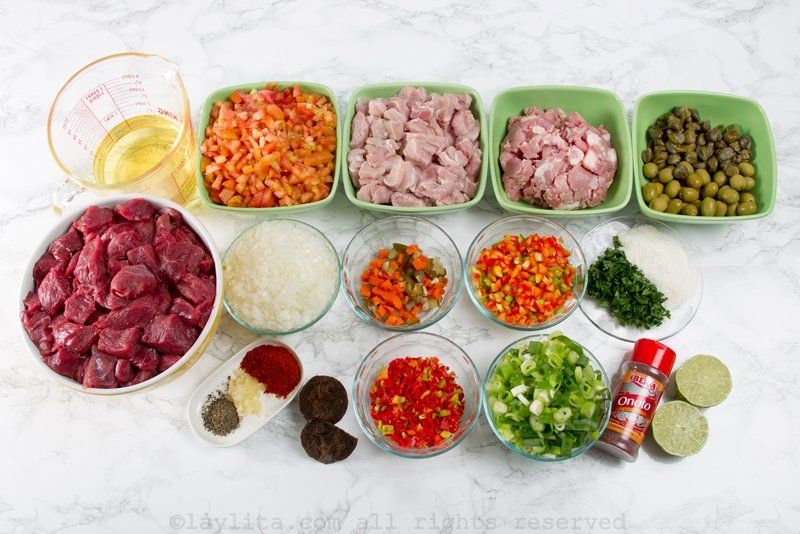

Na Venezuela, além do presépio, da árvore e do Papai Noel, um dos grandes simbolos do Natal é a Hallaca!, uma massa de milho envolta em folhas de bananeira, parecendo uma pamonha, recheada com um guisado a base varios ingredientes. Mais do que a comida em si, o ritual do preparo é o mais marcante nesse prato. A tradiçao é que toda a familia se una para prepará-lo, cada um sendo responsável por uma parte do processo.
A Hallaca! nosso prato típico do natal.
Uma receita da culinária venezuelana: a Hallaca. A iguaria é envolvida em folha de bananeira e deixa a mesa mais colorida. Confira como fazer!
INGREDIENTES:
Ingredientes da Massa
1 quilo de farinha de milho, preferentemente marca PAN.*
1 litro de caldo de galinha.
sal ao gosto.
1 colher de sopa de colorau.
1 colher de açafrão diluído em meia xícara de óleo vegetal.
Ingredientes da Massa.
Ingredientes do Recheio
1 quilo de carne bovina picadas em cubinhos pequenos.
500 gramas de carne suína picada em cubos pequenos.
2 cebolas grandes picadas.
200 gramas de cheiro verde.
100 gramas de pimenta-de-cheiro.
500 gramas de pimentão cortado em cubos pequenos.
100 gramas de alcaparras.
500 mililitros de vinho tinto seco.
20 gramas de cominho moído.
2 xícaras de chá de caldo de galinha.
pimenta-do-reino moída a gosto.
20 gramas de colorau.
1 cabeça de alho pequeno.
batata cortada em rodelas cozida.
cenoura cortada em rodelas cozida.
azeitonas a gosto.
uvas-passas pretas a gosto.

Ingredientes do Recheio.
PREPARAÇAO:
Preparaçao da Massa
Em uma tigela, coloque a farinha de milho, o caldo de galinha, o sal, o colorau, o açafrão.
Misture bem até formar uma massa homogênea.
Pegue porções da massa, enrole e reserve.
Bolas de Massa preparadas.
Preparaçao do Recheio
Em uma tigela, coloque a carne bovina, a carne suína, o cominho, a pimenta-do-reino moída, o colorau e misture bem com mãos.
Coloque a carne em uma panela em fogo alto e sele de todos os lados.
Transfira a carne selada para um refratário e reserve.
Na mesma panela onde selou as carnes, coloque a cebola, o alho, o pimentão, a pimenta de cheiro e refogue.
Quando a cebola estive bem dourada, volte com as carnes seladas para a panela, despeje o caldo de galinha, o vinho tinto, o cheiro verde, as alcaparras e cozinhe por 1 hora ou até secar o caldo. Apague o fogo e reserve.
Pegue uma folha de bananeira com 30 centímetros de largura, unte com azeite, polvilhe colorau, coloque em cima da folha bolinhas da massa de farinha de milho, 2 colheres de sopa da carne cozida, rodelas de batata cozidas, rodelas de cenoura, azeitonas e uvas passas.
Dobre a folha de bananeira como se fosse uma pamonha, amarre com barbante e cozinhe em uma panela com água fervente em fogo médio por 40 minutos.
Apague o fogo, retire da água, retire o barbante com cuidado e sirva.